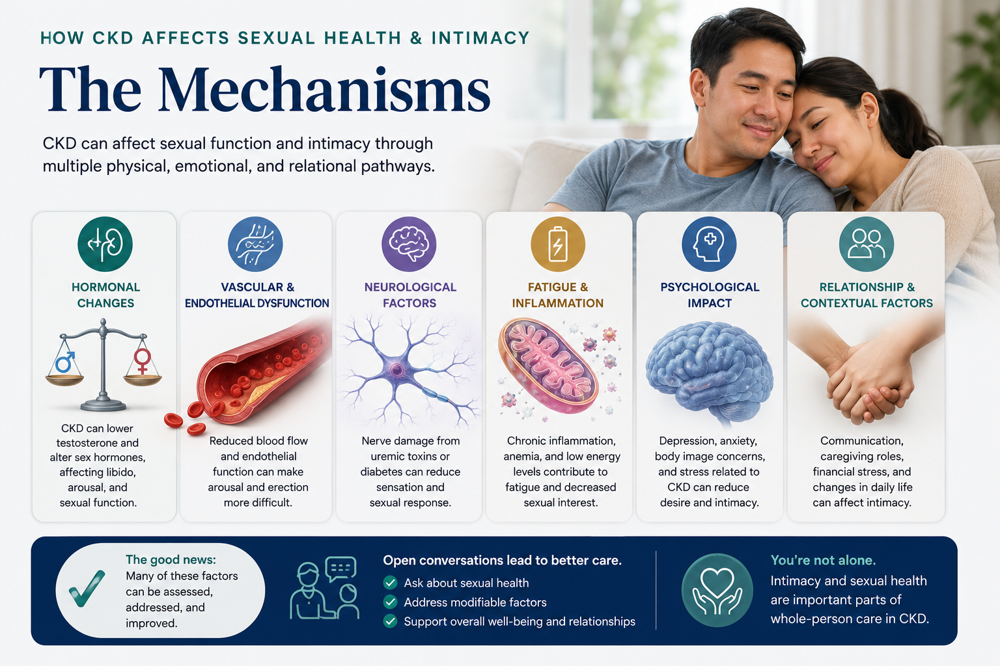
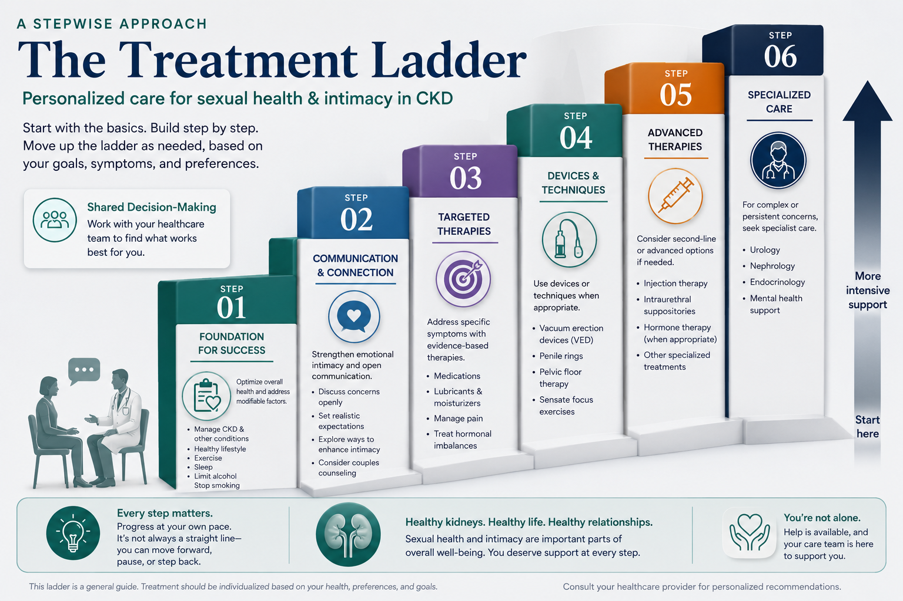
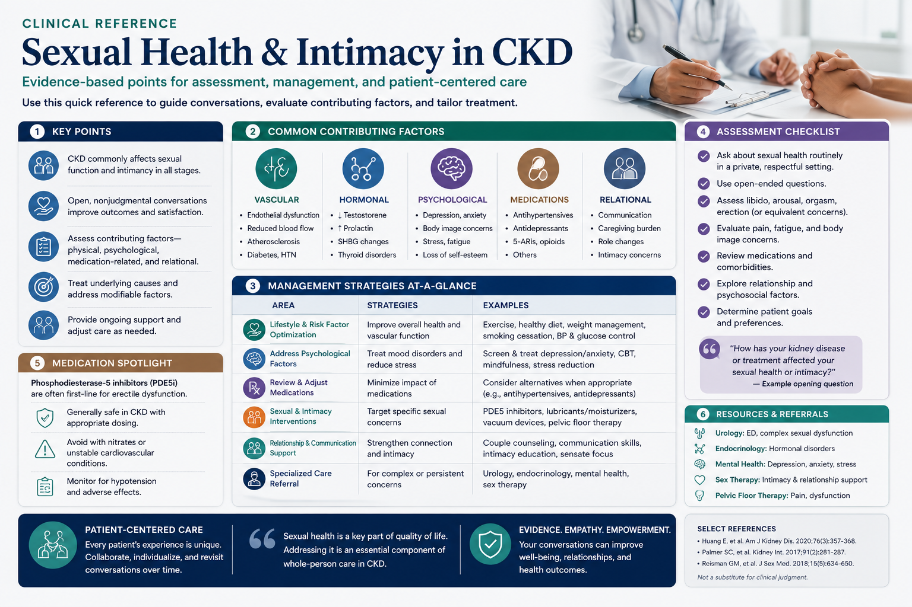
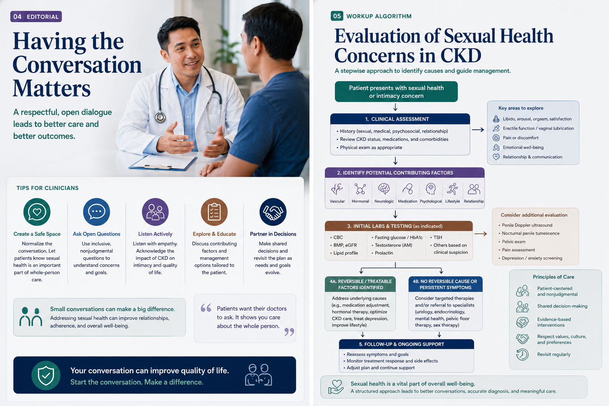
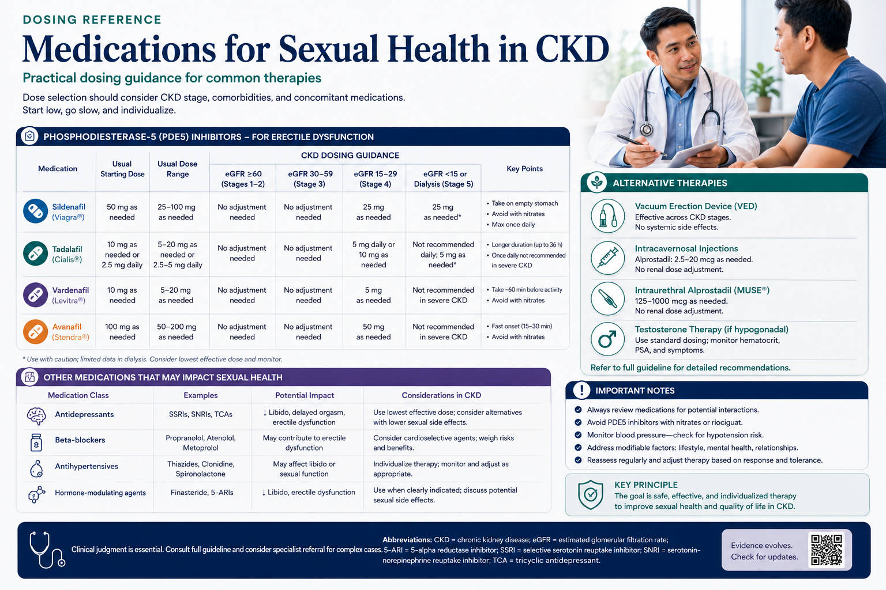
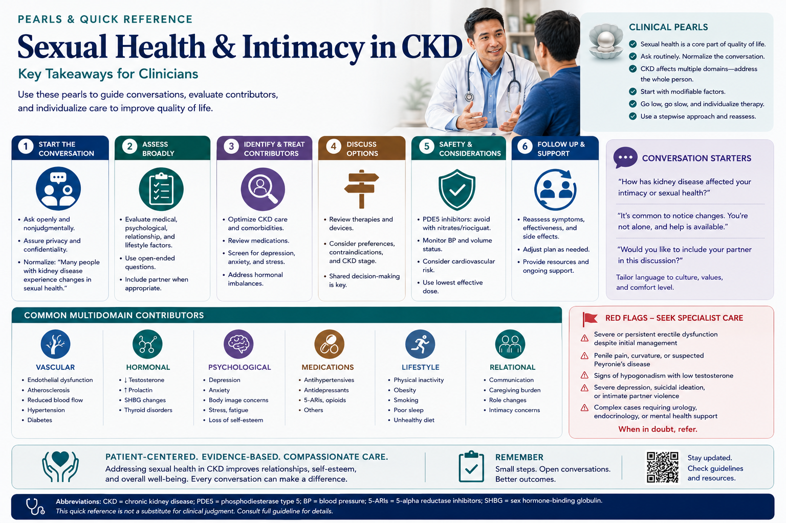

Sexual health problems in kidney disease are a medical issue — not a personal failing.
Sexual dysfunction means persistent difficulty with sexual desire, arousal, physical response, or satisfaction. It is not a character flaw or a sign of weakness. In chronic kidney disease and especially in end-stage renal disease (ESRD), it is a direct physiological consequence of what the disease does to your hormones, blood vessels, nerves, and energy levels.
This guide covers:
- The 5 biological pathways through which CKD disrupts sexual health
- What men and women typically experience — and why
- Which common medications are contributing factors
- An interactive IIEF-5 self-assessment tool for men
- A 4-tier evidence-based treatment ladder
- How to raise this topic with your nephrologist

This guide discusses sexual health in clinical terms. All topics are addressed medically. You may read it privately.
Five ways CKD disrupts your sexual health.
Kidney disease does not damage sexual function through a single pathway. It attacks it from five directions simultaneously — which is why the problem is so prevalent and why treating just one factor often gives only partial relief.
What men with CKD commonly experience.
Erectile dysfunction (ED)
ED — the inability to get or maintain an erection sufficient for satisfying sexual activity — affects approximately 80% of men on hemodialysis. It is typically caused by a combination of vascular damage, autonomic neuropathy, low testosterone, and the psychological impact of chronic illness. In CKD, ED is rarely due to a single cause.
Low testosterone (hypogonadism)
Uremic toxins disrupt the hormonal axis that regulates testosterone production. Signs of low testosterone include reduced sexual desire, persistent fatigue, loss of morning erections, mood changes, and gradual loss of muscle mass. Total testosterone alone can be misleading in CKD because a protein (SHBG) that carries testosterone in the blood is elevated in uremia, making total levels look normal even when the active (free) form is deficient. Your doctor should measure free testosterone to get an accurate picture.
Ejaculatory difficulties
Autonomic neuropathy can cause delayed ejaculation or, less commonly, retrograde ejaculation (where semen goes into the bladder instead of out). Both are frustrating but treatable.
Fertility
CKD reduces sperm count, motility, and morphology. Men on dialysis are often sub-fertile but not always infertile. If you and your partner wish to conceive, discuss this specifically with your nephrologist and a urologist — options exist, including assisted reproduction after transplantation.
What women with CKD commonly experience.
Sexual dysfunction in women with kidney disease is underdiagnosed and underreported. In clinical studies, women are significantly less likely than men to be asked about sexual health by their nephrologist — yet rates of dysfunction are nearly as high.
Reduced sexual desire
The most common complaint. Hormonal disruption — particularly elevated prolactin and low estrogen — directly reduces the neurological drive for sexual interest. Fatigue and depression compound this significantly.
Vaginal dryness and discomfort
Low estrogen levels (common in dialysis patients and post-menopausal women with CKD) cause thinning and dryness of the vaginal lining (atrophic vaginitis). This makes intercourse uncomfortable or painful. Over-the-counter vaginal lubricants and moisturizers are effective first-line options; low-dose vaginal estrogen is safe in most patients.
Pain during intercourse (dyspareunia)
Caused by vaginal dryness, atrophic changes, and sometimes pelvic floor muscle tension (vaginismus) that develops as a protective response to expected pain. Pelvic floor physiotherapy is highly effective for this.
Difficulty reaching orgasm (anorgasmia)
Peripheral neuropathy reduces genital sensation. Reduced blood flow impairs engorgement. Medications (particularly SSRIs and opioids) delay or block orgasm. This is addressable through medication review, vaginal estrogen, and where appropriate, psychosexual therapy.
Menstrual changes and fertility
Many women on dialysis experience irregular periods or complete cessation of menstruation (amenorrhea) due to hormonal disruption. Successful transplantation typically restores regular cycles within 6–12 months. Pregnancy in CKD is possible but high-risk — plan it with your nephrologist and obstetrician together.
Common medications that affect sexual function.
Several medications routinely used in CKD management have well-documented effects on sexual function. Identifying a drug cause is important — it may be adjustable, while an underlying physiological cause may take longer to treat.
| Medication | Common Use | Effect in Men | Effect in Women | What to Discuss |
|---|---|---|---|---|
| Beta-blockers (metoprolol, atenolol, propranolol) |
Blood pressure, heart failure | ED, ↓ libido | ↓ libido, ↓ arousal | Newer agents (carvedilol, nebivolol) have less effect on sexual function |
| Thiazide diuretics (hydrochlorothiazide) |
Blood pressure, edema | ED (most common drug cause) | ↓ lubrication | Consider switching to loop diuretics or CCBs if clinically appropriate |
| Spironolactone | Heart failure, resistant HTN | Gynecomastia, ED | Menstrual irregularity | Anti-androgen effect; dose reduction or switch to eplerenone may help |
| SSRIs / SNRIs (sertraline, escitalopram, duloxetine) |
Depression, anxiety | Delayed ejaculation, ↓ libido | Anorgasmia, ↓ libido | Switching to bupropion or mirtazapine may reduce sexual side effects; never stop antidepressants without medical guidance |
| Gabapentin | Nerve pain, restless legs | ED, ↓ libido | ↓ libido, ↓ sensation | Dose-dependent; minimum effective dose review |
| Opioids (tramadol, morphine, codeine) |
Chronic pain | ↓ testosterone, ↓ libido | ↓ libido, anorgasmia | Chronic use causes central hypogonadism; discuss opioid reduction or rotation |
IIEF-5: Rate your erectile function.
The International Index of Erectile Function (IIEF-5) is the most widely validated questionnaire for assessing erectile dysfunction. It is used in nephrology clinical trials worldwide. Answer based on how things have been over the past 4 weeks. A score of 21 or below indicates some degree of ED worth discussing with your nephrologist.
Rosen RC et al. Urology 1999;49:83-90. This calculator is a clinical screening tool, not a diagnostic instrument. A low score indicates you should discuss erectile function with your nephrologist or urologist.
A 4-tier approach to treatment.
Effective management of sexual dysfunction in CKD is not a single prescription — it is a stepwise programme starting with the fundamentals and escalating based on response. Most patients see meaningful improvement when steps 1 and 2 are optimised before adding specialist-level interventions.

- Dialysis adequacy: aim for Kt/V ≥ 1.4 per session — reducing uremic toxin load improves hormonal function
- Treat anemia: erythropoiesis-stimulating agents (ESAs) to hemoglobin 10–11.5 g/dL — clinical trials show ESAs independently improve sexual function scores
- Blood pressure control: but review all antihypertensives for sexual side effects (see medication table above)
- Regular moderate exercise: 30 minutes, 3–5 times per week — improves endothelial function, testosterone levels, and mood
- Psychosocial support: treating depression and addressing relationship stressors are as important as any medication
Men:
- PDE5 inhibitors (sildenafil / tadalafil): effective in ~60% of hemodialysis patients with ED. Sildenafil is not removed by dialysis — take it 1–2 hours after your HD session to avoid blood pressure drop. Always start at the lowest dose (25 mg)
- Zinc supplementation (8–12 mg/day elemental zinc): zinc deficiency is common in dialysis patients and independently lowers testosterone; supplementation can improve libido before hormonal therapy is considered
Women:
- Vaginal lubricants (water-based or silicone-based): use at time of intercourse; safe with all kidney medications
- Vaginal moisturizers (e.g. Replens, hyaluronic acid gel): use regularly every 2–3 days to restore tissue moisture, not just during intercourse
- Psychosexual counselling: highly effective for desire and orgasm difficulties when psychological or relationship factors are prominent
- Testosterone replacement (men with confirmed hypogonadism): requires blood testing to confirm low free testosterone before starting; transdermal gel is preferred in dialysis patients
- Cabergoline (men and women with elevated prolactin): a dopamine agonist that brings prolactin back to normal and often restores libido within weeks
- Vacuum erection device (men): non-pharmacological, effective, safe in patients on anticoagulation
- Low-dose vaginal estrogen (women): cream or tablet form; minimal systemic absorption makes it safe in most CKD patients; discuss with your nephrologist or gynecologist
- Intracavernosal alprostadil injections (men): self-administered injection into the penis; highly effective when PDE5 inhibitors fail; requires urologist training
- Penile prosthesis (men): surgical implant; reserved for severe refractory ED in patients who are cardiovascularly stable for surgery
- Pelvic floor physiotherapy (women): specialist treatment for dyspareunia and vaginismus; very effective, non-pharmacological
- Structured sex therapy programme (couples): cognitive-behavioural and sensate-focus techniques; addresses desire, arousal, and relationship dynamics concurrently
How to talk to your nephrologist about this.
In Philippine nephrology practice, sexual health is rarely raised during clinical consultations — by patients or by physicians. You should not have to wait for your doctor to ask. Here is how to start.
- "Doctor, I've been having some changes in my sexual health since starting dialysis. Can we discuss this?"
- "I read that this is common in kidney disease — could my medications or hormone levels be contributing?"
- "My partner and I have been affected by this. Are there treatments we can try?"
Your nephrologist is not embarrassed by this question. It is a clinical problem with clinical solutions.
- When did the problem start? Was the change gradual or sudden?
- Does it happen in all situations, or only in specific ones?
- Do you have a partner? Are there relationship stressors?
- Do you feel depressed or anxious? How is your sleep?
- Have any medications been changed recently?
- Your complete medication list (including over-the-counter drugs and herbal supplements)
- Your IIEF-5 score from this page (if male)
- A note of when the problem started
- Any specific questions written down in advance
- Urology (men) — for ED evaluation, testosterone management, vacuum device fitting, and surgical options
- Gynecology (women) — for hormonal assessment, atrophic vaginitis, and FSFI screening
- Psychiatry / Psychologist — for depression treatment and couples counselling
- Endocrinology — for complex hormonal disorders (hyperprolactinemia, thyroid dysfunction)
Questions patients ask — answered honestly.
Yes, with important precautions. Sildenafil is not removed by hemodialysis — it stays in your body longer than in someone with normal kidneys. Your nephrologist should start you at the lowest dose (25 mg) and clear you cardiovascularly first. The most important rule: never take sildenafil with nitrate medications (such as isosorbide mononitrate or nitroglycerin). This combination can cause a sudden, dangerous drop in blood pressure. Always time the dose after your dialysis session — not before — to avoid adding to the blood pressure drop that naturally occurs after hemodialysis.
For most patients, yes — significantly. Successful transplantation removes the uremic toxin burden, restores hormonal signalling, corrects anaemia, and eliminates the physical and psychological weight of dialysis. Multiple studies show meaningful improvements in IIEF and FSFI scores within the first year after transplantation. Transplant remains the most powerful intervention for CKD-related sexual dysfunction.
Yes. Your arteriovenous (AV) fistula arm can be used normally during sexual activity — it does not need to be protected. If you have a tunneled dialysis catheter (in the neck or chest), avoid positions that pull on or compress the catheter exit site, and make sure the catheter cap is securely in place. If you feel any pain, pulling, or notice bleeding around the catheter site, stop and contact your dialysis centre. Otherwise, sexual activity is safe.
Not necessarily. CKD reduces fertility in both men (lower sperm count and motility) and women (irregular ovulation), but this is not permanent for most people. After a successful kidney transplant, fertility often recovers substantially. If pregnancy is your goal, it should be planned carefully with your nephrologist and a maternal-fetal medicine specialist — kidney transplant recipients can have successful pregnancies, though they carry additional risks that need specialist management.
Not always. Many causes are directly treatable. Correcting anaemia with ESAs, adjusting blood pressure medications, starting zinc supplementation, prescribing PDE5 inhibitors, treating hormone deficiencies, or receiving a kidney transplant can all result in meaningful or complete improvement. Some patients experience near-complete recovery of sexual function after even modest improvements in dialysis adequacy. This is a reason to raise the problem — not to accept it silently.
Research confirms that most nephrologists do not routinely screen for sexual dysfunction, despite its near-universal prevalence in ESRD. This is due to time constraints during clinic visits, cultural taboo, the assumption that patients will volunteer the information, and a historical over-focus on laboratory targets over quality of life. You are not obligated to wait. Raising the issue directly gives your doctor permission to help.
When to seek immediate medical attention.
Most sexual health concerns in CKD are non-urgent. The following situations, however, require prompt evaluation.
- Chest pain or severe shortness of breath during or after sexual activity Stop activity immediately. Call emergency services or go to the ER. This may indicate a cardiac event — sexual exertion increases heart workload comparable to climbing two flights of stairs.
- Sudden loss of vision or hearing after taking a PDE5 inhibitor Stop the medication immediately and seek emergency care. These are rare but serious side effects of sildenafil and tadalafil. Do not take another dose until cleared by your nephrologist and ophthalmologist or ENT specialist.
- Painful erection lasting more than 4 hours (priapism) Go to the emergency room immediately. Priapism is a medical emergency. Without prompt treatment, it can cause permanent damage to penile tissue. It can be triggered by PDE5 inhibitors, injected alprostadil, or certain medications (phenothiazines, anticoagulants).
- Sudden complete loss of erectile function May indicate a vascular event or a new medication interaction. Report to your nephrologist at the next available opportunity rather than waiting for a routine visit.
- Unusual vaginal bleeding Any unexpected vaginal bleeding — particularly if you are post-menopausal or on hormonal therapy — warrants a gynecological evaluation to exclude endometrial or other pathology.
Sexual Dysfunction in CKD / ESRD: Pathophysiology
Sexual dysfunction in ESRD is multifactorial and bidirectional — the disease generates it, the medications maintain it, and the psychosocial burden amplifies it. A structured pathophysiological framework guides rational workup and treatment selection.

Hypothalamic-pituitary-gonadal (HPG) axis disruption
Uremic toxins — particularly indoxyl sulfate and p-cresol sulfate — impair GnRH pulsatility at the hypothalamic level. The resulting picture is a paradoxical hypergonadotropism: elevated LH and FSH with inadequately low sex steroid response (combined primary + secondary hypogonadism). SHBG is elevated in uremia due to reduced hepatic clearance, masking true androgen deficiency on total testosterone assays.
Hyperprolactinemia (prolactin typically 25–100 ng/mL in ESRD) compounds the picture via two independent mechanisms: impaired dopaminergic tone (reduced DA → disinhibited lactotroph secretion) and elevated β-endorphins suppressing GnRH. Zinc deficiency, present in ~50% of hemodialysis patients through dialysate losses and restricted dietary intake, directly inhibits 5α-reductase and reduces testosterone bioactivity independent of production.
Vascular mechanisms
Endothelial dysfunction in CKD is driven by ↓ eNOS activity and accumulation of ADMA (asymmetric dimethylarginine), the endogenous eNOS inhibitor. Reduced NO bioavailability impairs corporal smooth muscle relaxation (erection) and vaginal vasocongestion (lubrication/engorgement). Atherosclerosis of the internal pudendal and helicine arteries creates ischaemic erectile dysfunction directly. CKD-MBD with calcification of genital vasculature adds an irreversible component in advanced disease.
Neurogenic mechanisms
Autonomic neuropathy in uraemia impairs the parasympathetic efferents (S2–S4) responsible for reflexogenic erection and vaginal lubrication. Sympathetic adrenergic tone is simultaneously heightened (volume expansion, renin–angiotensin activation), further inhibiting erection via vasoconstriction. Somatic neuropathy reduces pudendal nerve conduction velocity, impairing genital sensation and the afferent limb of orgasmic reflex arcs.
Psychogenic and psychosocial
Depression prevalence in ESRD approaches 30–40% — driven by cortisol excess (directly suppressing HPG axis), inflammatory cytokines (IL-6, TNF-α crossing the blood-brain barrier), altered neurotransmitter metabolism in uraemia, and the chronic psychosocial burden of dialysis dependency. Body image disruption (AV fistula visibility, tunneled catheter, scars, oedema, skin hyperpigmentation), caregiver burden on partners, and loss of the "provider" or "partner" role in Filipino cultural context are underappreciated amplifiers.
Medication-induced mechanisms
- Beta-blockers: ↓ sympathetic output → impaired emission reflex; β1/β2 blockade also reduces testosterone secretion via direct gonadal effect
- Thiazides: ↑ SHBG (worsening androgen deficiency), zinc wasting in urine (contributing to 5α-reductase inhibition)
- Spironolactone: competitive androgen receptor antagonism → ED, gynecomastia in men; menstrual disruption in women
- SSRIs/SNRIs: serotonin-mediated dopamine suppression → ↓ libido; 5-HT2 receptor activation → delayed ejaculation and anorgasmia; direct effect on peripheral genital tissue
- Opioids: central hypogonadism via ↓ GnRH pulsatility; morphine-6-glucuronide accumulation in CKD prolongs effect
Systematic evaluation of sexual dysfunction in CKD.
Men: IIEF-5 (score ≤ 21 = any ED; ≤ 7 = severe). Women: FSFI full (19-item) or brief FSFI-6; score < 26.55 = dysfunction.
Characterise: onset (sudden = vascular/medication; gradual = hormonal/neuropathic), situational vs global, partner-specific factors, psychiatric history (PHQ-9 for depression), current medication list with timing changes.
Hormonal: total testosterone, free testosterone (or SHBG + calculated), LH, FSH, prolactin, estradiol (women).
Metabolic: serum zinc, TSH (hypothyroidism mimics hypogonadism), fasting glucose, HbA1c.
Haematological: CBC with Hgb, Hct — anaemia severity correlates directly with sexual dysfunction score.
Renal / dialysis: BUN, urea reduction ratio or Kt/V — confirm adequate dialysis.
Low T + elevated LH/FSH → primary hypogonadism (testicular failure; consider testicular US)
Low T + normal/low LH → secondary/central hypogonadism (hypothalamic/pituitary)
Prolactin > 100 ng/mL → pituitary MRI to exclude prolactinoma
Organic vs psychogenic ED: nocturnal penile tumescence (NPT) distinguishes — present NPT = psychogenic; absent = organic
Vascular ED: penile duplex ultrasound (peak systolic velocity < 25 cm/s = arterial insufficiency; end-diastolic velocity > 5 cm/s = venous leak)
Princeton Consensus III classification:
Low risk: < 3 major CAD risk factors, asymptomatic, stable HTN, mild stable angina (CCS I–II), > 6 weeks post-uncomplicated MI → PDE5 inhibitors safe
Intermediate risk: ≥ 3 CAD risk factors, moderate stable angina (CCS III), recent MI 2–6 weeks → exercise stress test before prescribing
High risk: unstable/refractory angina, uncontrolled HTN (> 170/100), recent MI < 2 weeks, high-risk arrhythmia, severe HF → defer sexual activity and withhold PDE5i
Pelvic examination: vaginal atrophy (pale/dry/thin mucosa, Brinkley score), vaginismus assessment (pelvic floor hypertonicity).
Estradiol: especially if amenorrhoeic or post-menopausal dialysis patient.
Referral: gynaecology for FSFI administration, endocrine evaluation, and pelvic floor therapy planning.

Pharmacological protocols with CKD-specific dosing.
PDE5 Inhibitors in CKD / ESRD
PDE5 inhibitors are first-line for vasculogenic and mixed-aetiology ED in men. Key pharmacokinetic consideration: all three agents are highly protein-bound (≥ 96%) and not significantly removed by haemodialysis. Post-HD administration is preferred to avoid additive hypotension from the post-dialysis BP nadir.
| Drug | Starting Dose | eGFR < 30 / HD | Max Dose | Key Notes |
|---|---|---|---|---|
| Sildenafil | 25 mg PRN | 25 mg PRN | 25 mg per 48h | Not dialyzable; post-HD timing; avoid with nitrates (absolute), alpha-blockers (4h separation) |
| Tadalafil | 5 mg daily or 10 mg PRN | 5 mg daily (preferred) or 5 mg PRN | 10 mg per 48h | Once-daily dosing improves adherence; longer half-life (17.5h) means timing less critical |
| Vardenafil | 5 mg PRN | 2.5 mg PRN | 10 mg per 48h | More QTc-prolonging potential; avoid in patients on Class IA/III antiarrhythmics |
Testosterone Replacement Therapy (Men)
- Indication: total testosterone < 300 ng/dL or free testosterone < 73 pg/mL (9 pmol/L) with symptoms of hypogonadism
- Target: total T 400–700 ng/dL; reassess free T and SHBG 3–6 months after initiation
- Preferred formulation: transdermal gel (avoids first-pass hepatotoxicity, predictable levels, easy dose titration); IM testosterone undecanoate (every 12 weeks) is an alternative in compliant patients
- Monitoring: Hgb/Hct every 3 months (erythrocytosis risk — a significant concern in dialysis patients already prone to high haematocrit); PSA at baseline and 6 months; LFTs if oral formulation used
- Contraindications / cautions: avoid if Hgb > 12 g/dL (already common in dialysis patients on ESAs); prostate cancer (absolute); severe OSA without CPAP treatment
Hyperprolactinaemia Management
- Cabergoline: 0.25 mg PO twice weekly; titrate by 0.25 mg every 4 weeks to normalise prolactin; maximum 2 mg twice weekly. Preferred over bromocriptine in dialysis (better tolerated, twice-weekly dosing)
- MRI pituitary: indicated when prolactin > 100 ng/mL to exclude macro-prolactinoma before initiating dopamine agonist therapy
- Response monitoring: repeat prolactin 4 weeks after dose change; check testosterone/estradiol once prolactin is normalised (HPG axis recovery may lag 4–8 weeks)
ESA Therapy and Sexual Function
Multiple RCTs (Schaefer et al., 1989; Bommer et al., 1990; Lim et al., 1989) demonstrate that correction of anaemia with recombinant human erythropoietin to Hgb 10–11.5 g/dL results in statistically significant improvement in IIEF scores, testosterone levels, and subjective sexual satisfaction — independent of blood pressure changes. Mechanistically: improved tissue oxygenation + partial restoration of HPG axis pulsatility (suppressed by anaemia-related sympathetic activation). This is a quality-of-life benefit worth documenting explicitly when counselling on ESA initiation — it is not a side effect; it is a treatment outcome.
Women: Hormonal Interventions
- Low-dose vaginal estrogen (estriol cream 0.03% or estradiol 10 mcg vaginal tablet, 2× weekly after initial daily loading for 2 weeks): minimal systemic absorption; safe in most CKD patients without hormone-sensitive malignancy; does not require dose adjustment in CKD
- Low-dose testosterone (off-label; 0.5 mg/day transdermal for HSDD in post-menopausal women): limited CKD-specific data but supported by ISSWSH guidelines for post-menopausal HSDD; monitor for androgenic side effects (acne, hirsutism)
- Cabergoline: same protocol as in men — indicated when prolactin is elevated; restores desire and arousal within 4–8 weeks of normalisation

Five pearls for everyday nephrology practice.
Clinical Pearls — Sexual Dysfunction in ESRD
